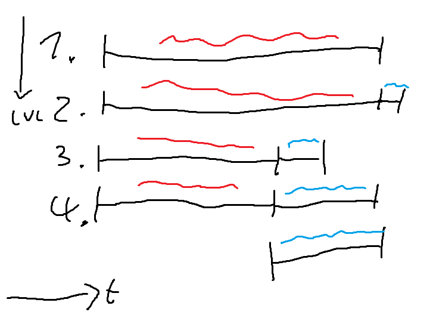

Zu ploetzliches kalt Duschen kann Erkaaeltungen verursachen (Quelle: Meine Erfahrung).
Wenn man sich langsam Steigert macht man das am besten indem man hinten eine kalte Phase anhaengt.
Sobald diese lang genug ist, dass sie fuer einen Duschgang reicht, laesst man den warmen Teil am Ende einfach weg.

Erklaerung der einzeilnen Phasen/Lvl. im Bild:
Die ganze Zeit ueber mit warmen Wasser duschen
Ein kaltes abkuehlen am ende des Duschens
Die kalte Phase verlaengern (und gleichzeitig die warme verkuerzen, um sich an 'kurze' duschgaenge zu gewoehnen.). Das einseifen und abspuellen findet weiterhin nur in der warmen Phase stadt
Die kalte Phase solle so lang sein, dass sie von der lagne Reicht um sich einmal abzuspuellen (einseifen, ist der 'einfache' Teil)
Direkt kalt beginnen: langsam an kaelte gewoehnen -> (ohne laufendes Wasser) einseifen -> abspuehlen -> done 😁.